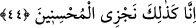

Fakir (Bursevî)’nin kanâatine göre daha doğru olanı, onların gölgeler altında olmaları
ifâdesi, büyük bir rahatlık içinde olacaklarının kinâye yoluyla anlatımından ibârettir.
Çünkü gölge insanı rahat ettirmek için var olan bir unsurdur. Nitekim “onları koyu bir
gölgeye koyarız.” (en-Nisa, 4/57) âyet-i kerîmesindeki ifâde de aynı şekilde büyük bir
rahatlığın kinâye yoluyla anlatımı mâhiyetindedir. Allah Teâlâ’nın büyük rahatlığı değil
de gölgeyi zikretmiş olması insanların kalplerini takvâya teşvik etmek içindir. Çünkü
yeryüzünde öyle yerler vardır ki buralar hem sıcaktır, hem suyu, ağaçları ve gölgeleri
azdır.
42. Canlarının çektiğinden çeşit çeşit meyveler arasında olacaklardır.
“Canlarının
çektiği”,
yemeyi
temennî
ettikleri,
çeşit
çeşit
“meyveler
arasındadırlar.” Onlar bu meyveleri, aç oldukları ve karınlarını doyurmak için
yemezler. Tam tersine zevk olsun diye yerler. Kısaca ifâde etmek gerekirse onlar,
kendilerine aykırı davrananların aksine refah ve çeşit çeşit nimet içerisindedirler.
43. (Kendilerine:) «İşlediklerinizin karşılığı olarak şimdi âfiyetle yiyin için»
(denir).
Bu cümlenin başında gizli bir “denilir” ifâdesi mevcûddur. Bu söylediklerimize göre
cümleyi takdir edip yeniden ifâde edecek olursak; şüphesiz takvâ sâhipleri gölgelerde
ve pınarların başlarında ve canlarının çektiği meyvalar arasındadırlar. Onlar bu hâlde
iken kendilerine şöyle denir: Cennet nimetlerinden, meyvelerinden yiyiniz. Cennetin
suyunu ve içeceğini içiniz, hem de âfiyetle, boğazınızdan aşağıya yuvarlanırcasına yağ
gibi kayarak yiyip içiniz. Hiç bir hastalığa ve şişmanlığa yakalanmadan yiyip içiniz.
Bütün bunları dünyada iken işlemiş olduğunuz sâlih amelleriniz sebebiyle özellikle -el-
Hakka sûresinde geçtiği üzere- tutmuş olduğunuz orucunuz sebebiyle yiyiniz, içiniz.
Bu ifâde onlara, kendilerinden hoşnut olunduğunu ve kendilerinin Allah’ın sevgisine
erdiklerini bildirmek için bir ikram emridir. Bu emir ikramı, Allah’ın ihsanı ve asla
caymayan vaadi sebebiyledir. Yoksa bizzat işlenmiş olunan amel sebebiyle sevaba
eriliyor değildir.